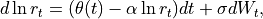
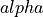

quantlib.models.shortrate.onefactormodels.blackkarasinski.BlackKarasinski¶
- class BlackKarasinski(YieldTermStructure term_structure, Real a=0.1, Real sigma=0.1)¶
Bases:
OneFactorModelStandard Black-Karasinski model
defined by

where  and
 are constants.
are constants.- __init__(*args, **kwargs)¶
Methods
__init__(*args, **kwargs)params(self)set_params(self, Array params)Attributes
dynamics